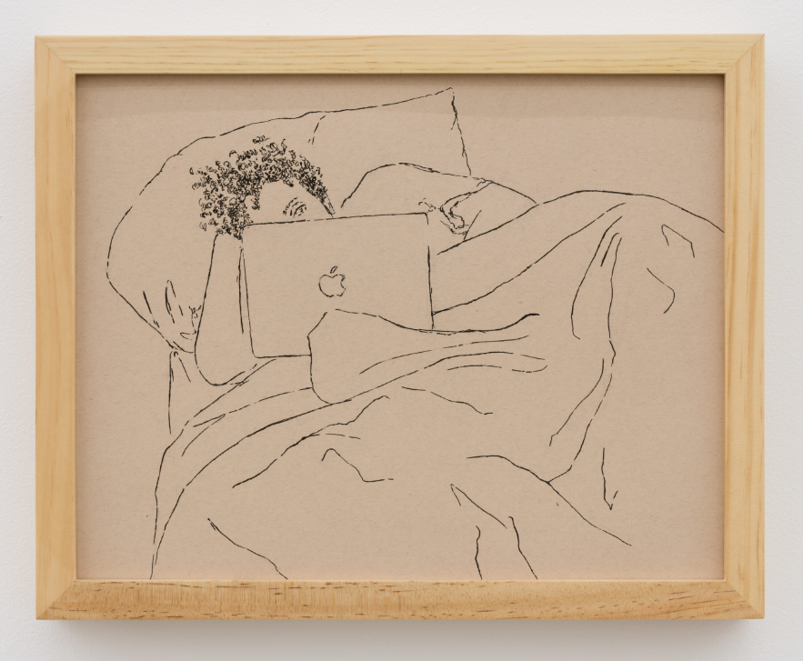

SCA Public Program: Carolyn Lazard
Carolyn Working, 2020, Pen on paper. Image courtesy of the artist and Trautwein Herleth, Berlin.
ABOUT THE ARTIST
Carolyn Lazard (b. 1987, San Bernardino, CA) is an artist whose primary medium is iteration. They also work across video, sculpture, installation, and performance. Their practice remembers the generative incapacity of debility.
Lazard has had solo exhibitions at Artists Space, New York; Walker Art Center, Minneapolis; Nottingham Contemporary, Nottingham; Institute of Contemporary Art, Philadelphia; Kunstverein Braunschweig, Braunschweig; Trautwein Herleth, Berlin; and Essex Street Gallery, New York. Their work has been included in exhibitions at the Museum of Modern Art, New York; Museum of Contemporary Art, Los Angeles; Museum für Moderne Kunst, Frankfurt; Museum Ludwig, Cologne; Hamburger Bahnhof, Berlin; and CAPC Musée d’Art Contemporain, Bordeaux. Lazard was included in the Whitney Biennial in 2019 and 2024, Greater New York in 2021, the Venice Biennale in 2022, and the NGV Triennial in 2023. Lazard is a Pew Fellow, a Ford Disability Futures Fellow, a United States Artists Fellow, and a MacArthur Fellow. They teach at Bard College in the Hudson Valley.
This public program is made possible with the support of Eric Ceputis and David W. Williams.
DINNER
After the talk, SCA members and their guests are invited to join the artist for dinner at Sofi.